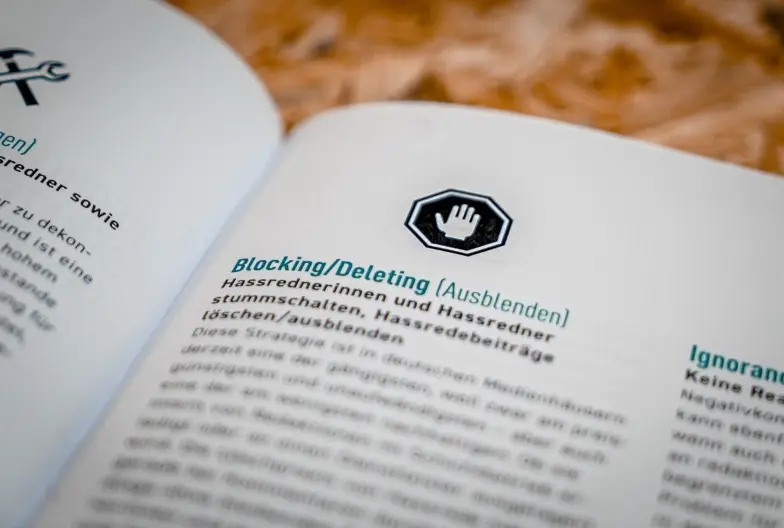

Comparison of Daily COVID-19 Cases Prediction Spatial Models
based on Architecture and Features
This project implements various models to predict daily COVID-19
cases primarily using spatial data provided by Facebook's
(Meta's) Data For Good program. Various machine learning and
deep learning models are compared based on the accuracy of
predicted values. This project also justifies the importance of
several features, such as daily COVID testing and vaccination
statistics.


Generating Handwriting using LSTMs.
handwritten databases of Arabic and Bengali language, this
project implements a recurrent neural network using LSTM layers
that predicts one data point at a time. The trained neural
network is capable of generating human-like handwriting based on
text input. This is the next step toward handwriting and
document analysis.

DistilmBERT and XLM RoBERTa for Multilingual Toxic Comment
Classification.
We studied how to use pre-trained language model-based methods
for toxic comment classification and the performances of
different pre-trained language models on these tasks. This study
introduces an ensemble approach, where we have used pre-trained
models - DistilmBert and xlm-Roberta-large-xnli to perform the
toxic comment classification task. We trained our model on an
English dataset, tested it on Wikipedia talk page comments in
several languages, and achieved an accuracy of over 93%.